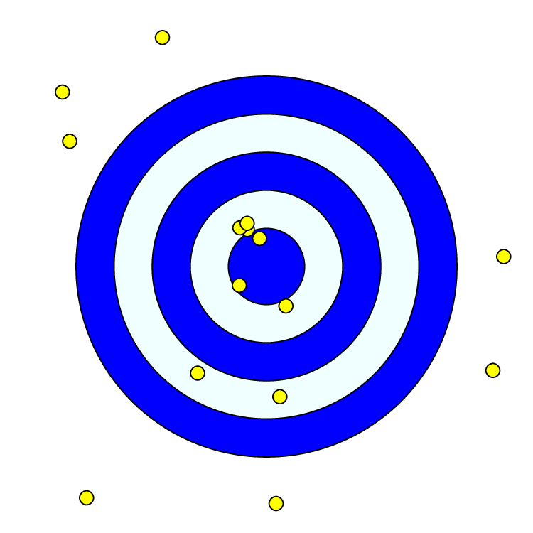

Introduction to MCMC using RevBayes
A simple Archery example for building a hierarchical model and sampling under Markov Chain Monte Carlo
Archery.RmdOverview
This tutorial is intended to provide a introduction to the basics of Markov chain Monte Caro (MCMC) using the Metropolis-Hastings algorithm. This will provide a brief introduction to MCMC moves as well as prior distributions. We begin with a simple example of estimating the probability distribution of an archer’s ability to shoot at a target, and the distance those arrows land from the center. We will simulate data using this example and attempt to estimate the posterior distribution using a variety of MCMC moves.
Modeling an Archer’s Shots on a Target

Representation of the archery data used in this tutorial.Each yellow dot represents the position of an arrow shot by an archer.The distance of each arrow from the the center of the target is assumed to be exponentially distributed with mean \(\mu\).
We’ll begin our exploration of Bayesian inference with a simple archery model. For this model, there is an unknown archer shooting \(n\) arrows at a target (see {% ref target %}). The distance \(d\) of each arrow from the target’s center is measured. Let’s assume that the distance of each arrow from the bullseye follows an exponential distribution—i.e., \(d\sim\mbox{Exp}(\mu^{-1})\). This implies the archer has an inherent ability to shoot arrows at an average distance \(\mu\). Then, the probability density of each arrow distance \(d_i\) is
\[ \begin{aligned} P(d_i \mid \mu) = \frac{1}{\mu} e^{-d_i/\mu}. \end{aligned} \]
Simple intuition suggests that, given that we observe \(n\) arrows, a good estimate of \(\mu\) is the average of all the arrow distances \(\bar d = \frac{1}{n}\sum_{i=1}^n d_i\). Indeed this is the maximum likelihood estimate! In fact, given \(n\) arrows whose distances follow an exponential distribution, it turns out that the observed average \(\bar d\) follows a gamma distribution, with parameters \(n\) and \(n/\mu\),
\[ \begin{aligned} P(\bar d \mid \mu,n) = \frac{(n/\mu)^n}{\Gamma(n)} {\bar d}\,^{n-1}e^{-n\bar d /\mu}. \end{aligned} \]
In this case, the average \(\bar d\) acts as a sufficient statistic for \(\mu\). This means that it tells just as much about \(\mu\) as the collection of individual arrow distances. Therefore, we will use a Gamma\((n, n/\mu)\) distribution on \(\bar d\) as the likelihood of our data.
From Bayes’ theorem, the posterior distribution of \(\mu\) given \(\bar d\), \(P(\mu \mid \bar d)\), is:
\[ \begin{aligned} P\left(\mu \mid \bar d\right) = \frac{P\left(\bar d \mid \mu\right) \times P\left(\mu\right)}{P\left(\bar d\right)} \end{aligned} \]
Where \(P(\mu \mid \bar d)\) is our posterior distribution, \(P(\bar d \mid \mu)\) is our likelihood or data distribution, \(P(\mu)\) is our prior distribution, and \(P(\bar d)\) is our marginal likelihood. The take-home message here is that, if we’re interested in doing Bayesian inference for the archery model, we need to specify a likelihood function and a prior distribution for \(\mu\). In virtually all practical cases, we cannot compute the posterior distribution directly and instead use numerical procedures, such as a Markov chain Monte Carlo (MCMC) algorithm. Therefore, we will also have to write a MCMC algorithm that samples parameter values in the frequency of their posterior probability.
We’ll use a simple exponential distribution as a prior on the parameter of the model, \(\mu\). The exponential distribution has one parameter \(\alpha\) representing our prior belief about the mean arrow distance (figure, below). Different choices for \(\alpha\) represent different prior beliefs.

Exponential distribution with one parameter \(\alpha\). This distribution is used as a prior distribution on the average arrow distance \(\mu\).Here we show different curves for the exponential distribution when using different parameters.
{% ref archery_model %} shows the graphical model for the archery model. This nicely visualizes the dependency structure in the model. We see that the parameter \(\alpha\) is drawn in a solid square, representing that this variable is constant (i.e., it takes a “known” value). Following the graph in {% ref archery_model %}, we see an arrow connecting \(\alpha\) and the variable \(\mu\). That simply means that \(\mu\) depends on \(\alpha\). More specifically, \(\mu\) is a stochastic variable (shown as a solid circle) that is drawn from an exponential distribution with parameter \(\alpha\). Another constant variable, \(n\), represents the number of shots taken by the archer. Finally, we have the observed data \(\bar d\) which is drawn from a gamma distribution with parameters \(\mu\) and \(n\), as can be seen by the arrows pointing from those parameters to \(d\). Furthermore, the solid circle of \(\bar d\) is shaded which means that the variable has data attached to it.

Graphical model for the archery model.
Writing MCMC from Scratch
Tutorial Format
This tutorial follows a specific format for issuing instructions and information.
The boxed instructions guide you to complete tasks that are not part of the RevBayes syntax, but rather direct you to create directories or files or similar.
Information describing the commands and instructions will be written in paragraph-form before or after they are issued.
All command-line text, including all Rev syntax, are given in monotype font. Furthermore, blocks of Rev code that are needed to build the model, specify the analysis, or execute the run are given in separate shaded boxes. For example, we will instruct you to create a new variable called n that is equal to 10 using the = operator like this:
n = 10Create Your Script File
Make yourself familiar with the example script called archery_MH.Rev which shows the code for the following sections. Then, start a new and empty script in your text editor and follow each step provided as below.
Name the script file my_archery_MH.Rev or anything you’d like.
The Metropolis-Hastings Algorithm
Though RevBayes implements efficient and easy-to-use Markov chain Monte Carlo (MCMC) algorithms, we’ll begin by writing one ourselves to gain a better understanding of the moving parts. The Metropolis-Hastings MCMC algorithm (Metropolis1953, Hastings1970) proceeds as follows:
Generate initial values for the parameters of the model (in this case, \(\mu\)).
Propose a new value (which we’ll call \(\mu^\prime\)) for some parameters of the model, (possibly) based on their current values
-
Calculate the acceptance probability, \(R\), according to:
\[\begin{aligned} R &= \text{min}\left\{1, \frac{P(\bar d \mid \mu^\prime)}{P(\bar d \mid \mu)} \times \frac{P(\mu^\prime)}{P(\mu)} \times \frac{q(\mu)}{q(\mu^\prime)} \right\}\\ &= \text{min}\left\{1, \text{likelihood ratio} \times \text{prior ratio} \times \text{proposal ratio} \right\}, \end{aligned}\]
where the proposal ratio (also called the Hastings ratio) ensures the correct target density, even if the move is biased.
-
Generate a uniform random number \(u\) between 1 and 0.
- if \(u<R\):
-
then accept the move and set \(\mu = \mu^\prime\).
- else (if \(u \geq R\)):
-
the value of \(\mu\) does not change and the move is rejected: \(\mu = \mu\).
Record the values of the parameters.
Return to step 2 many, many times, keeping track of the value of \(\mu\).
Reading in the data
Since we do not have access to archery data, we will simulate the the shots of our archer using the simulation tools in RevBayes. By simulating the data, we can also evaluate how well our moves and prior model perform—i.e., how robust and accurate our estimators are. After completing this exercise, feel free to repeat it and alter the true values to see how they influence the posterior distribution.
# Simulate some data (i.e. shoot some arrows)
# First we need the number of arrows to shoot
n = 10
# Then we need a true mean distance
mu_true = 1
# Simulate the observed mean distance of the arrows shot from a gamma distribution
arrow_mean = rgamma(1, n, n/mu_true)[1]The Rev code above uses the rgamma() function to simulate a single observed arrow_mean from \(n=10\) arrows shot on target. The [1] following the rgamma() function is needed because this function always returns a vector even when we only request a single value. Thus, in order to treat arrow_mean as a single value, we have to request the first element of the vector returned by that function.
Initializing the Markov chain
We have to start the MCMC off with some initial values for all of the parameters. One way to do this is to randomly draw values of the parameters (just \(\mu\), in this case) from the prior distribution. We’ll assume a simple exponential prior distribution; that is, one with \(\alpha = 1\).
# Initialize the chain with some starting value
alpha = 1.0
mu = rexp(1, alpha)[1]Likelihood function
Next we will specify the likelihood function, which will compute the probability of our data given the prior model. We use the gamma distribution for the likelihood. Since the likelihood is defined only for values of \(\mu\) greater than 0, we return a likelihood of 0.0 if \(\mu\) is negative:
# Define the likelihood function on the mean
function likelihood(mu){
if(mu < 0.0)
return 0.0
return dgamma(arrow_mean, n, n/mu, log=false)
}In Rev, we can create a user-defined function using the function keyword. In our function definition above, likelihood() takes a single value as an argument that is expected to be the mean (\(\mu\)) value. All other parameters in our function are expected to be defined before likelihood() is called.
Prior distribution
Similarly, we need to define a function for the prior distribution. Here, we use the exponential probability distribution for the prior on \(\mu\):
# Define the prior function on the mean
function prior(mu){
if(mu < 0.0)
return 0.0
return dexp(mu, alpha, log=false)
}Monitoring parameter values
Additionally, we are going to monitor, i.e. store, parameter values into a file during the MCMC simulation. For this file we need to write the column headers in the first line of our output file, which we will name archery_MH.log (you may have to change the newline characters from \n to \r\n if you’re using a Windows operating system.):
# Prepare a file to log our samples
write("iteration","mu","\n",file="archery_MH.log")
write(0,mu,"\n",file="archery_MH.log",append=TRUE)We’ll also monitor the parameter values to the screen, so let’s print the initial values:
# Print the initial values to the screen
print("iteration","mu")
print(0,mu)Writing the Metropolis-Hastings Algorithm
At long last, we can write our MCMC algorithm. First, we define how often we print to file (i.e., monitor); this is called thinning if we do not choose to save every value of our parameter to file. If we set the variable printgen=1, then we will store the parameter values at every iteration; if we instead choose printgen=10, then we’ll only save the values every \(10^{th}\) step in our Markov chain.
# Write the MH algorithm
printgen = 10We will repeat this resampling procedure many times and iterate the MCMC using a for loop (e.g., step 6 in The Metropolis-Hastings Algorithm Section. We will start this part by defining the number of iterations for our MCMC ( reps = 10000), and writing the first line of our ‘for‘ loop. We’ll also define a variable delta (explained momentarily).
reps = 10000
delta = 1
for(rep in 1:reps){In Rev, the contents of every for loop must be enclosed within a set of ‘curly braces’ . Our loop will not be complete until we finish it and add the closing brace. Additionally, it is good style to make our loops readable by indenting the contents within the curly braces. We recommend that you use 4 spaces to represent these indents.
For our MCMC algorithm, the first thing we do is generate a new value of \(\mu^\prime\) to evaluate (step 2 of the The Metropolis-Hastings Algorithm Section). We’ll propose a new value of \(\mu\) by drawing a random number from a uniform window and then adding this random number to the current value (i.e. centered on the previous value). The value of delta defines the width of the uniform window from which we draw new values. Thus, if delta is large, then the proposed values are more likely to be very different from the current value of \(\mu\). Conversely, if delta is small, then the proposed values are more likely to be very close to the current value of \(\mu\). By changing the value of delta we can tune the behavior of the proposal, and therefore delta is called a tuning parameter.
# Propose a new value of p
mu_prime <- mu + runif(n=1,-delta,delta)[1]Next, we compute the proposed likelihood and prior probabilities using the functions we defined above, as well as the acceptance probability, \(R\) (step 3 of the The Metropolis-Hastings Algorithm Section):
# Compute the acceptance probability
R = ( likelihood(mu_prime)/likelihood(mu) ) * ( prior(mu_prime)/prior(mu) )Then, we accept the proposal with probability \(R\) and reject otherwise (step 4 of the The Metropolis-Hastings Algorithm Section):
# Accept or reject the proposal
u = runif(1,0,1)[1]
if(u < R){
# Accept the proposal
mu = mu_prime
}Finally, we store the current value of \(\mu\) in our log file (step 5 of the the The Metropolis-Hastings Algorithm Section). Here, we actually check if we want to store the value during this iteration.
if ( (rep % printgen) == 0 ) {
# Write the samples to a file
write(rep,mu,"\n",file="archery_MH.log",append=TRUE)
# Print the samples to the screen
print(rep,mu)
}and close the for loop
}Execute the MCMC Analysis
Now that you have defined your model and written functions to compute the probability and sample values of \(\mu\), you are now ready to run your analysis.
Begin by running the RevBayes executable. You can do this by navigating to the folder containing your RevBayes executable and running it. If you’re on a Unix system you can do this by typing:
rb{:.bash}
Alternatively, if you are on a Unix system and the RevBayes binary is in your path, you only have to type the following from any directory:
rb{:.bash} Now you can run your RevBayes script:
source("my_archery_MH.Rev")Exercise 1
Write and execute the script outlined above, which you can give any name you like (there is also an example file called
archery_MH.Rev).The
.logfile will contain samples from the posterior distribution of the model. Open the file inTracerto learn about various features of the posterior distribution, for example: the posterior mean or the 95% credible interval.
Pretty awesome, right?
Below we show an example of the obtained output in Tracer. Specifically, {% ref mcmc-trace %} shows the sample trace (left) and the estimated posterior distribution of \(\mu\) (right). There are other parameters, such as the posterior mean and the 95% HPD (highest posterior density) interval, that you can obtain from Tracer.
{% figure mcmc-trace %} 

The Trace of sample from an MCMC simulation. Right: The approximated posterior probability distribution for \(\mu\).
More on Moves: Tuning and Weights
In the previous example we hard coded a single move updating the variable \(\mu\) by drawing a new value from a sliding window. There are other ways how to propose new values; some of which are more efficient than others.
First, let us rewrite the MCMC loop so that instead we call a function, which we name move_slide for simplicity, that performs the move:
Slide move
Now we need to actually write the move_slide function. We mostly just copy the code we had before into a dedicated function
There are a few things to consider in the function move_slide. First, we do not have a return value because the move simply changes the variable \(\mu\) if the move is accepted. Second, in addition to the tuning parameter delta, we expect an argument called weight which will tell us how often we want to use this move. Otherwise, this function does exactly the same what was inside the for loop previously.
(Note that you need to define this function before the for loop in your script).
Experiment with different values for delta and see how the effective sample size (ESS) changes.
There is, a priori, no good method for knowing what values of delta are most efficient. However, there are some algorithms implemented in RevBayes, called auto-tuning, that will estimate good values for delta.
Scaling move
As another move we will write a scaling move. The scaling move proposes an update by drawing a random number from a \(Uniform(-0.5,0.5)\) distribution, exponentiating the random number, and then multiplying this scaling factor by the current value. An interesting feature of this move is that it is not symmetrical and thus needs a Hastings ratio (this is the same as the proposal ratio given in Section [sect:MH_algorithm]). The Hastings ratio is rather trivial in this case, and one only needs to multiply the acceptance rate by the scaling factor.
As before, this move has a tuning parameter called lambda.
The sliding-window and scaling moves are very common and popular moves in RevBayes. The code examples here are actually showing the exact same equation as implemented internally. It will be very useful for you to understand these moves.
Exercise 2
Rewrite your previous script to include these two different moves, and re-run the script to estimate the posterior distribution of \(\mu\) again.
Use only a single move and set
printgen=1. Which move has the best ESS?How does the ESS change if you use tuning parameter values
delta=10ordelta=0.1for the sliding-window move? What aboutlambda=10orlambda=0.1for the scaling move?You can keep track of your results using the following table.
The Metropolis-Hastings Algorithm with the Real RevBayes
We’ll now specify the exact same model in Rev using the built-in modeling functionality and moves. It turns out that the ‘Rev‘ code to specify the above model is extremely simple and similar to the one we used before. Again, we start by “reading in” (i.e. making up) our data.
# Simulate some data (i.e. shoot some arrows)
# First we need the number of arrows to shoot
n = 10
# Then we need some true mean distance
mu_true = 1
# Simulate the observed mean distance of the arrows we shot
arrow_mean = rgamma(1, n, n/mu_true)[1]Now we specify our prior model.
# Specify the prior distribution
alpha <- 1.0
mu ~ dnExponential(alpha)One difference between RevBayes and the MH algorithm that we wrote above is that many MCMC proposals are already built-in, but we have to specify them before we run the MCMC. We usually define (at least) one move per parameter immediately after we specify the prior distribution for that parameter.
# Define a move for our parameter, mu
moves[1] = mvSlide(mu, delta=1, weight=1.0)Next, our likelihood model.
# Specify the likelihood model
d_bar ~ dnGamma(n, n/mu)
d_bar.clamp(arrow_mean)We wrap our full Bayesian model into one model object (this is a convenience to keep the entire model in a single object, and is more useful when we have very large models):
# Construct the full model
my_model = model(mu)We use “monitors” to keep track of parameters throughout the MCMC. The two kinds of monitors we use here are the mnModel, which writes parameters to a specified file, and the mnScreen, which simply outputs some parts of the model to screen (as a sort of progress bar).
# Make the monitors to keep track of the MCMC
monitors[1] = mnModel(filename="archery_RB.log", printgen=10)
monitors[2] = mnScreen(printgen=1000, mu)Finally, we assemble the analysis object (which contains the model, the monitors, and the moves) and execute the run using the .run command:
# Make the analysis object
analysis = mcmc(my_model, monitors, moves)
# Run the MCMC
analysis.run(100000)
# Show how the moves performed
analysis.operatorSummary()Open the resulting archery_RB.log file in Tracer.
Do the posterior distributions for the parameter \(\mu\) look the same as the ones we got from our first analysis?
Hopefully, you’ll note that this Rev model is substantially simpler and easier to read than the MH algorithm script we began with. Perhaps more importantly, this Rev analysis is orders of magnitude faster than our own script, because it makes use of extremely efficient probability calculations built-in to RevBayes (rather than the ones we hacked together in our own algorithm).
Exercise 3
Run the built-in MCMC and compare the results to your own MCMC. Are the posterior estimates the same? Are the acceptance rates of the moves similar?
Add a second move
moves[2] = mvScale(mu,lambda=0.1,weight=1.0)Run the analysis again and compare the output.
Have a look at how the acceptance rate changes for different values of the tuning parameters.
Influence of the Prior
So far we have used a fairly simple exponential prior with \(\alpha = 1\). However, we have not explored what impact this prior has on our estimate of \(\mu\), or whether it is an appropriate prior distribution. If the prior is very informative, then our posterior distribution will be relatively similar to our prior beliefs. In order to explore the informativeness of the prior, we can change the true value of \(\mu\) so that it is very different from our prior belief. If we are still able to recover the correct value of \(\mu\), then we can say that our prior is fairly uninformative.
If we find that our prior distribution is very informative, we have two options for minimizing sensitivity to the prior. First, we can use a less informative prior distribution. For example, since our data is exponentially distributed, a good choice for an uninformative prior is a \(Gamma(0,0)\) distribution (this is the Jeffreys prior). Unfortunately, this prior distribution is improper (it does not integrate to 1), and so we can’t use it in RevBayes. However we can approximate this prior distribution by using very small parameter values, e.g. \(Gamma(0.001, 0.001)\). As you can see in {% ref gamma_distribution %}, compared to the exponential distribution, the \(Gamma(0.001, 0.001)\) distribution is much more “flat”.
{% figure gamma_distribution %} 
Comparison of exponential distribution with \(\alpha = 1\) and uninformative gamma distribution with parameters \(\alpha=0.001\) and \(\beta=0.001\).
The second and simplest way we can overcome the informativeness of the prior is to increase the amount of data we collect. We can do that in our example by increasing the number of arrows we shoot.
Exercise 4
Increase the true mean arrow distance so that it is significantly larger than \(\alpha\). How does this impact your estimate of \(\mu\)?
Now use an uninformative \(Gamma(0.001, 0.001)\) prior for \(\mu\). Did your estimate of \(\mu\) improve?
Increase the number of arrows shot. How does this change the shape and scale of the posterior distribution?